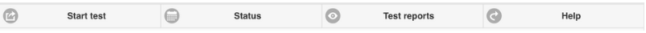
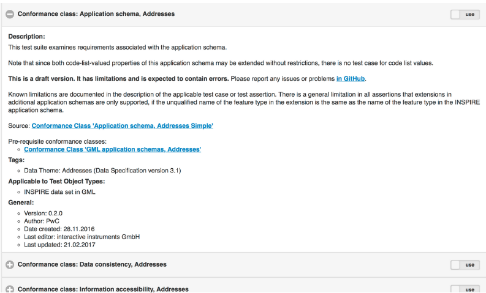
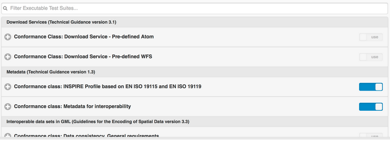

ETF Quickstart¶
Bemerkung
Das Projekt ist nur Teil der OSGeoLive Virtuelle Maschine Disk (VMDK)
ETF ist ein Open-Source-Testframework zur Validierung von Geodaten, Metadaten und Webservices in Geodateninfrastrukturen (SDIs). Das Design von ETFs wird von drei Zielen bestimmt: Benutzerfreundlichkeit, Standardkonformität und der Möglichkeit, alle Ressourcen einer SDI testen zu können.
Dieser Quickstart behandelt folgende Schritte:
Navigation durch die Webanwendung
Start eines Tests
Monitoring eines Testlaufs
Beobachten und Verwalten von Testberichten
Inhalt
Einleitung¶
Wählen Sie aus dem Startmenü aus. Die Applikation benötigt einen kurzen Augenblick um zu starten und öffnet eine Webseite unter http://localhost:9090/ETF
In der Kopfzeile befindet sich ein Menü mit 4 Optionen, die jeweils unterschiedliche Ansichten und Funktionalitäten darstellen:
Der erste Menüpunkt heißt Start test. In diesem Abschnitt werden alle verfügbaren (d.h. installierten) ausführbaren Test-Suites aufgelistet. In diesem Abschnitt kann eine ausführbare Test-Suite ausgewählt und für ein Testobjekt ausgeführt werden.
Der zweite Menüpunkt lautet Status. Dieser zeigt alle Tests an, die derzeit auf dem System ausgeführt werden, und ermöglicht es, eine Monitoransicht für einzelne Testläufe zu öffnen, um den Status eines laufenden Tests zu überprüfen. Darüber hinaus werden die aktuell geladenen Komponenten unterhalb der laufenden Tests angezeigt.
Der dritte Menüpunkt führt zu den Testberichten. In diesem Bereich können die Ergebnisse eines abgeschlossenen Tests überprüft, detailliert analysiert oder heruntergeladen werden.
Die vierte Menüpunkt führt zur Hilfe. Dies ist ein Link zur Dokumentation. Die Hilfe gibt Anleitungen zur Nutzung aller Funktionalitäten von ETF.
Start test¶
Test Suite Selection¶
Die Startansicht zeigt die verfügbaren ausführbaren Testsuiten.

Weitere Informationen zu einer Testsuite erhalten Sie, indem Sie auf die Plus-Schaltfläche klicken.
Diese Information:
Enthält eine Beschreibung der Testsammlung.
Kann einen Link zur Abstract Test Suite enthalten, von der die Executable Test Suite abgeleitet wurde (Quelle).
Kann die Test Suite-Abhängigkeiten enthalten, die in einem Testlauf automatisch mit der Testsuite ausgeführt werden (erforderliche Konformitätsklassen).
Kann die Namen der zugeordneten Tags enthalten, die zum Gruppieren der Test-Suite in der Ansicht verwendet werden.
Der Name der anwendbaren Testobjekttypen (erläutert im nächsten Abschnitt).
Enthält allgemeine Informationen wie Version, Autor und letzten Bearbeiter, Erstellungs- und Änderungsdaten.
Um einen Testlauf zu starten, muss eine Test-Suite mit einem Klick auf den Umschalter nach rechts ausgewählt werden.

Ein Start-Button wird angezeigt, sobald mindestens eine Testsammlung ausgewählt ist.
Eine Test-Suite gilt nur für bestimmte Testobjekttypen, die in der Beschreibung aufgeführt sind. Es können auch mehrere Tests-Suites für einen Testlauf ausgewählt werden, sie müssen jedoch auf denselben Testobjekttyp anwendbar sein. Sobald eine Test-Suite ausgewählt wurde, wird der Schalter aller anderen Testsammlungen mit unterschiedlichen Testobjekttypen deaktiviert.
Eine Test-Suite kann von anderen Test-Suites abhängen. Die Abhängigkeiten sind auch in der Beschreibung der Test-Suites aufgeführt. Diese Abhängigkeiten werden während des Testlaufs automatisch ausgeführt.
Ein Klick auf die Schaltfläche Start öffnet eine neue Ansicht, die den Benutzer nach der zu testenden Zielressource fragt.
Konfiguration des Testlaufs¶

Das Feld „Bezeichnung“ ist obligatorisch und wird automatisch mit der aktuellen Uhrzeit und den Namen der ausgewählten Testsammlungen voreingestellt. Diese Bezeichnung wird in der Testberichtsübersicht angezeigt und kann geändert werden, um den Bericht nach einem Testlauf wiederzufinden.
Der Stil der Ansicht kann von den ausgewählten Test-Suite abhängen.
Dateibasierte Tests¶
Die folgenden Elemente werden angezeigt, wenn Test-Suites ausgewählt wurden, die eine oder mehrere Test-Dateien testen.
Wenn Datei-Upload als Datenquelle ausgewählt ist, können eine oder mehrere lokale Dateien ausgewählt und in ETF hochgeladen werden. ETF akzeptiert nur Dateien mit XML- und GML-Dateiendung und ZIP-Dateien, die diese beiden Dateitypen enthalten.
Bemerkung
Andere Dateien, wie Schemadefinitionsdateien, können nicht verwendet werden und werden vom ETF stillschweigend ignoriert!

Die maximale Größe der hochladbaren Datei wird angezeigt, wenn die Maus über das Fragezeichen bewegt wird.
Wenn die Daten im Web verfügbar sind, können sie durch die Bereitstellung einer einzigen URL getestet werden. Nachdem die Remote-Datei (URL) als Datenquelle ausgewählt wurde, kann eine URL zu einer einzelnen XML-, GML- oder ZIP-Datei eingegeben werden.

Wenn die URL eine Authentifizierung erfordert, können Benutzername und Passwort durch Klicken auf Anmeldeinformationen angegeben werden.

Service-Tests¶
Die folgenden Elemente werden angezeigt, wenn Test-Suites ausgewählt wurden, die einen Dienst testen sollen.
Die URL eines Dienstes muss eingegeben werden, beginnend mit http:// oder https://.

Wenn der Dienst eine Authentifizierung erfordert, können Benutzername und Passwort durch Klicken auf Anmeldeinformationen angegeben werden.
Abhängigkeiten und Parameter¶
Die Schaltfläche Test-Suite zeigt einige grundlegende Informationen zu den ausgewählten Tests-Suites und - falls zutreffend - zu den direkten Abhängigkeiten.

Wenn der Test Parameter akzeptiert, werden diese im Abschnitt Test-Suite-Parameter angezeigt. Optionale Parameter können durch Klicken auf die Schaltfläche Optionale Parameter angezeigt werden. Eine Beschreibung der Parameter wird angezeigt, wenn die Maus über das Fragezeichen bewegt wird.
Bemerkung
In den meisten Fällen können die voreingestellten Standardwerte verwendet werden.

Schließlich kann der Test durch Klicken auf die Schaltfläche Start gestartet werden. Die Ansicht wechselt dann automatisch in die Monitoransicht.
Überwachen von Testläufen¶
Nachdem ein Testlauf gestartet wurde, wird die Monitoransicht angezeigt.

Der blaue Balken zeigt den Fortschritt an.

Im Konsolenbereich werden Informationen und Ergebnismeldungen angezeigt. Der Testlauf kann mit einem Klick auf die Schaltfläche Abbrechen abgebrochen werden.
Die Ansicht kann verlassen werden, zum Beispiel mit dem X-Button in der oberen linken Ecke. Auch wenn der Browser geschlossen wird, wird die Testlaufausführung auf dem Server fortgesetzt.
Um die Monitoransicht nach dem Schließen wieder zu öffnen, wählen Sie in der Menüleiste die Statusansicht aus. In der Statusansicht werden alle laufenden Tests angezeigt. Ein Klick auf den Testlauf öffnet die Monitoransicht dieses Testlaufs.

Wenn ein Testlauf beendet ist und die Monitoransicht geöffnet wird, wird der Testbericht automatisch angezeigt.
Testberichte¶
In der Ansicht Testberichte werden alle Berichte angezeigt, die aus Testläufen generiert wurden.

Durch Klicken auf den Plus-Button werden Informationen über die Startzeit, den Testergebnisstatus, den Namen des Testobjekts und die verwendeten Test-Suiten angezeigt.
Ein Testbericht kann mit einem Klick auf Bericht öffnen wieder geöffnet oder durch Klick auf den Download-Button als HTML-Datei heruntergeladen werden.
Die Protokolldatei des Testlaufs kann mit der Schaltfläche Protokoll öffnen eingesehen werden. Durch Klicken auf die Schaltfläche Bericht löschen wird der Bericht dauerhaft gelöscht.
Prüfen von Testberichten¶
Oben in einem Testbericht werden allgemeine Informationen angezeigt, darunter der Gesamtstatus des Testergebnisses, die Startzeit, die Dauer und eine Tabelle, die den Status aller Tests auf mehreren Ebenen zusammenfasst.

Die Testberichte sind interaktiv. Mit dem Schalter Show (Anzeigen) können Sie Tests filtern, die nur fehlgeschlagen sind, oder nur manuelle Tests. All deaktiviert den Filter.
Der Bereich Level of detail wird verwendet, um zusätzliche technische Informationen in den Berichten anzuzeigen.

Die Testergebnisse werden hierarchisch in einem Bericht zusammengefasst. Auf der obersten Ebene befinden sich die Test-Suites.
Wenn Sie auf eine Test-Suite klicken, werden eine Beschreibung und alle dazugehörenden Tests in dieser Tests-Suite angezeigt. Fehler in einer Test-Suite können sofort an der roten Farbe erkannt werden. Die Anzahl der fehlgeschlagenen Tests wird in der oberen rechten Ecke angezeigt.

Die grüne Farbe zeigt einen bestandenen Test an. Bestandene Tests, die zusätzliche manuelle Testschritte erfordern, die nicht automatisiert werden konnten, sind orange eingefärbt. Die orange Farbe kann auch auf einen Test hinweisen, der übersprungen wurde, da er von einem anderen Test abhängt, der fehlgeschlagen ist. Den genauen Status finden Sie unter der Beschreibung.
Die Anzahl der Stufen hängt vom getesteten Testobjekt ab. Wenn Servicetests ausgeführt wurden, sieht die Hierarchie wie folgt aus:
Ausführbare Test-Suites
Testmodule (bündelt Testfälle)
Testfälle (bündelt Testschritte)
Testschritte (Interaktionen mit dem Dienst, bündelt Test-Assertionen)
Test-Assertions (atomare Tests)
In einem dateibasierten Test sind Testmodule und Testschritte nicht vorhanden und werden im Bericht nicht angezeigt.
Jeder Test enthält eine Beschreibung, wie Aspekte getestet werden, und listet die Anforderungen auf. Der Test kann einen Link zu einer abstrakten Test-Suite besitzen, aus der der Test abgeleitet wurde (Quelle).

Assertionen stehen für atomare Testabfragen auf der untersten Ebene. Fehlgeschlagene, rot gefärbte Assertionen zeigen Fehlermeldungen im Abschnitt Meldungen an.

Hilfreiche Informationen können auch auf der nächsthöheren Ebene gefunden werden, wie zum Beispiel die Antwort eines Dienstes auf der Testschrittebene (beachten Sie den Link Open saved response im Bericht).

Resources¶
Anhand der oben genannten Anweisungen finden Sie im Folgenden einen vordefinierte Ressourcen, die Sie im ETF testen können:
GML-Datensätze: Einige vordefinierte Datensätze können von hier heruntergeladen werden.
WMS-Dienste: Eine Liste der Dienste finden Sie hier.
WFS-Services: Eine Liste der Services finden Sie hier.
Bemerkung
Einige der Ressourcen bestehen nicht alle Tests, sodass Sie versuchen können, sie zu beheben, bevor Sie sie erneut überprüfen
Was kommt als Nächstes?¶
Dies war nur ein sehr kurzer Überblick über ETF. Weitere Informationen finden Sie in der Demo-Installation und im ETF GitHub space.
Bitte beachten Sie auch: